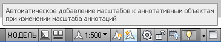

Здесь что то типа FAQ пополам с особенностями geo_tools.
Во первых все инструменты этого пакета рабочие - сам проверял. И все таки всегда найдется человек который скажет "не работает" и эти два утверждения не противоречат друг другу. :)
Можно поделить ошибки на две категории:
1. Первая это собственно ошибки. Как бы мне это было не неприятно я тоже ошибаюсь. Бывает вносишь изменения в одну кнопку и перестает работать другая. В общем: не предусмотрел, виноват, исправлюсь.
2. Во вторую категорию поподают ошибки когда у меня работает, а у человека нет. Почему? Потому что програмирование для меня хобби удобное, нужное, но хобби. И вылизывать свои программы до такой степени чтобы они работали на земле и на суше... смысле в любом автокаде и любом чертеже у меня не получится ни по времени да и по желанию. Поэтому ниже приведу те действия которые помогут отличить ошибки первой и второй категории.
2.1 Autocad должен быть 2008 и старше, может быть Civil, может "голый" (без надстроек). Со всякими другими кадами не тестировалось.
2.2 Некоторым командам (например отрисовки линий ЛЭП) со вставкой внемасштабных условных знаков (аннототивных блоков) для адекватной работы необходимо включить кнопки "Видимость аннотаций" и "Автоматическое добавление масштабов к ...".
2.3 Попробуйте выполнить команду на чистом листе (при установке Goe_Tools на команду БСоздать "Создание пустого чертежа" прописывается шаблон в котором есть все для правильной работы инструментов) некоторые построения требуют присутствие в чертеже определенных стилей: таблиц, мультивыносок и т.д. И могут не работать в другом чертеже. Моя обычная практика: когда приходит "чужой" чертеж открываю чистый лист и копирую в него содержимое пришельца - большинство проблем отпадает.
Резюме - если что то не работает - попробуйте перечисленное выше, если все равно не заработало пишите желательно поподробнее, с "выпиской" из командной строки, можно с картинками. Постараюсь исправить.
2013.01.09
updata
Примечание
Пункт 2.2 не актуален. Начиная с 2013.01.17 всключать "трехлопасные" кнопочки не обязательно.
2013.01.18